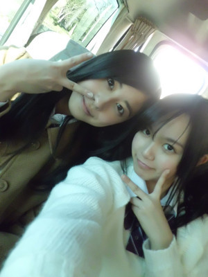
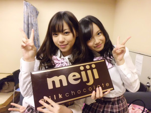
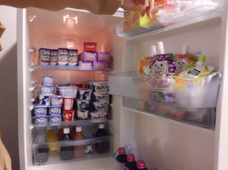
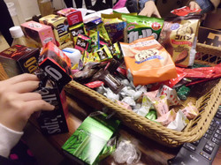
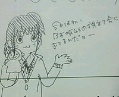
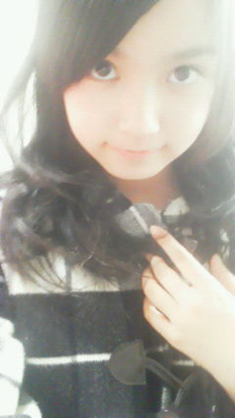
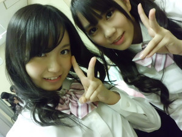

返回列表-BACK TO INDEX
はいー乃木坂46、なんとなんと
ＡＫＢ４８ リクエストアワー セットリストベスト100 2012
のオープニングで登場させていただきました!
＼(*＞ω＜*)/
「圏外 ぐるぐるカーテン 乃木坂46」
どひゃー。
イベントに出させていただけるのが決まった時から登場する直前まで
メンバー全員おんなじ気持ちでいましたおそらく。
ＡＫＢ４８ふぁみりーさんと同じステージに立たせていただけるのは嬉しい!
それも年に1度のビッグイベントに呼んでいただけるのは本当に嬉しい!
けど...。
公式ライバルがのこのこＡＫＢ４８さんファンみなさんの前で
ＡＫＢコールからの乃木坂デビュー曲なんて
歌っていいのかなとか
ＡＫＢ４８ふぁみりーさんの曲を楽しみに来た東京ドームや映画館のみなさんが
不愉快に思わないかなとか('・・`)
もう不安。みんな不安でした。
ステージに立ち乃木坂46が挨拶し
デビューシングル「ぐるぐるカーテン」歌わせてください
歓声とサイリウムの光に包まれた瞬間!!!
(';д;)ぶわー
あの瞬間アンダーのみんなは楽屋で泣いていたんだよ。
1曲歌い上げたあと選抜組はステージで泣いてたけど
アンダー組のみんなも楽屋で泣いていたんだよ。
選抜組はプレッシャーおっきくて辛かったかもしれないけど
アンダー組は選抜組が抱えてるプレッシャーとか不安とか感じつつ
それでもやっぱりＡＫＢ４８さんたちと同じステージで33人で
デビューシングル歌いたかったなって
楽屋裏ではなくステージに立っていたかったなって
いろんな気持ちが入り混じって複雑だった。
でも選抜組のみんな、楽屋で待ってるアンダー組の気持ちよくわかってくれてたんだよね。
きっと不安だったよね。でもアンダー組の前ではちょっとも弱音吐かずに
笑顔で、堂々と、ぐるカー踊ってくれたよね。
アンダー組も複雑だったけど、選抜組にも気をつかわせとったんかな('`)
ごめんね。
ありがとう!!!!!
ひめたん乃木坂のみんなが大好きよ＼(*＞ω＜*)/
乃木坂は33人でひとつのチーム
これからもみんなで頑張ろうね!
そして乃木坂ファンのみなさん
今回のは全国のみなさんへのサプライズだったイコール
乃木坂ファンであるみなさんにさえも秘密にしていたということになってしまいました...。
乃木坂の初めてのぐるカーパフォーマンスを楽しみにしてくださったみなさん
がっかりさせてしまったならごめんなさい。
これからも練習頑張って、日々完成度を上げていきます!!!
そしてみなさんの前で33人全員そろって「乃木坂46デビュー曲初お披露目」する日を
楽しみにしていて下さい。
だって、ひめたんはまだひめきゅん♪のみなさんにデビュー曲披露できてなーい!!!
ひめたんぐるカーのダンス大好きなのよ(*^^*)
うん頑張る♪♪♪
最後にＡＫＢ４８ふぁみりーのみなさん
ＡＫＢ４８ファンのみなさん
今日は私たちに貴重な時間を下さって、本当にありがとうございました。
デビュー前にも関わらずあんな大きなステージで歌わせていただけて、
「プロ」のステージを間近で体験させていただいて
乃木坂46は幸せ者ですっ(*´∀｀*)/
ひめたん
2012/01/20 02:15｜
今日はねー、
ちはるん(斉藤ちはるchan)とディナーしたの♪
ひめたん最近ちはるんるんをみたらね、やたら絡みたくなる(*/ω＼*)ぽ
ほんとはがっつり遊びたかったんぢゃけどね、なにせ昼間は学校だからね。
レッスンに行くついでにご飯食べよっかってなったのよ。
ちはるんるん可愛いねちはるんるん(//ω//)

らりん(永島聖羅chan)とかあみあみ(能條愛未chan)とかがねー、
「最近ひめたんのことわかってきた(^^)♪」って。
そう。ひめたんの全てがわかるには５ヶ月かかるらしいです!
ようやく最近ひめたんに対するガードが取れたって
そりゃこんな怪しい子、馴れるの大変ぢゃろうなーわら
 ひめたんみたいな妹が欲しいです(*^ω^*)うちの妹になって下さい！！←
ひめたんみたいな妹が欲しいです(*^ω^*)うちの妹になって下さい！！←
いいの？
ひめたんのお姉ちゃんになってくれるのー？
もちろんだよお姉ちゃんっ∩^ω^∩♪
ひめたん、元気になって良かったね
メンバーみんなお疲れみたいだけど、大丈夫なの？？？
みんな大変そう('`)←
でもみんなと会うことで元気いっぱいになるんだろうから
頑張らんにゃね!
とりあえずこの前で一段落ついた感はありますね(・∀・)
お母さんの愛情たっぷりの料理で育ったひめたんは、
東京でなに食べているんですか？気に入っている料理があったら教えて下さい。
日による。ほんとーうに日による。気分によります。
東京はご飯も美味しいからねー(^^)
ちゃんと気を使ってるつもりですよー♪
風邪ひいた時、中元家ではどうするの？
広島独特の治し方が、あるのでしょうか？
いやいやそんなことないですよ(-ω-)
体をあっためて、あとはあっさり自然治癒に任せよう!って感じです←
ひめたんめったに風邪引かないもんなー。
放送部ってなにやるん？
コンクールみたいなのあるのかな？
コンクール。ありますね(・∀・)
校内放送、掃除の時の音楽、番組作りなどなど★
楽しかった。引退したくなかった。帰りたいー!
やってみたいアルバイトは？
ちっちゃい頃からパン屋さんに憧れてる(*^^*)
ひめたんパン屋さんが大好きなんですよ!
あんな美味しそうなパンと一緒にずっと居たいと思いませんかー？
あとリアルに、高校生なったらレジ打ちしたかったー。
ピっピって。楽しそーう(o>ω<o)
ひめたんの巻き髪めっちゃ可愛いわ←自分で巻いてるん？
いやいやーヘアメイクさんに巻いてもらいましたよ^^
これに乃木坂の新衣装着て昨日はばっちし撮影してまいりました(`・・)ゞ
ツインより巻いた方がいいーってメンバーの声が多かったのよねこれが。
みなさんどっち派ですかー？
ひめたんはサンフレッチェ広島っていうサッカーチーム知ってる？
もちろんもちろん(^ω^)
...ゆーて全然詳しくないです。
マスコットのあの子可愛いと思うわら
もっと勉強して出直してきますー!!!!!
ほんっとにお疲れ様です！！ご褒美に何か買ってあげる(-^〇^-)笑
今欲しいもんとかある～!?!?というか今度ディズニー行くかもだから、
お土産で買ってきて欲しいもの!!
えーほんとにー？ありがとうございます(。・ω・。)
それならぎゅーってできるサイズの可愛いぬいぐるみがほしい!!!
最近人肌恋しくて←え
好きな映画は？
いっちゃん最近だと、乃木坂の研修の時にＡＫＢさんのドキュメンタリー映画見たかな。
あーれは刺激になりましたと思います!
レンタルってやっとんかな？オススメします♪
ひめたんのすぐ上に、写ってはいけないもの（色々な意味で。）が、
写っていませんか？問題なければ良いのですが…。
ひめたん(*ゝω･*)ﾉその56のあの写メのことですねー
いやむしろ可愛いからいいかなーと思ったり∩^ω^∩
もちろんちゃーんと本人には許可取ってますよっ
ちなみに誰かわかりますか？答えは後日っ★
財布を落としました。それをひめたんが見てました。
財布の中を見たらひめたんの写真と現金100万円くらい入ってました。
財布を落とした事に気付いていません。
さて、ひめたんどうする？※面白い答えを期待しますｗ
いやーん面白さ求めんでー!!!!!
リアルに答えると、まずお財布の中身は見ないので
ひめたんの写真詰め込んでも大丈夫(`・ω・')わら
見たって設定なら...
とりあえず必死で追い掛けるかなー。足遅いから転けないといいなー。
んで届けたのちに、
「...パフェ食べたいなー(д)」とかね♪ふふふ
ひめたんの写真の映りがイマイチなら、こっそりトレードしておくのでお許しを。
ひめたん
2012/01/19 01:34｜
チョコレートはめっいーじ♪
今日は明治特集いっくよー!

明治さんの撮影の時は、差し入れのお菓子のボリュームに毎回感動します!

すごいしょー？

手作りレシピの動画撮影の時に、みんなが作ったっのお菓子を全部食べたのー(o>ω<o)!
ひめたん的には基本のトリュフと小さなデコチョコマフィンが
やーばい美味しかった
みなさんも作ってみてね♪
んあーもちろん
ひめたんおすすめ２色のマカロンにも挑戦してみましょ(^^)/
そう。明治の制服がめっちゃ可愛いの!
ブレザーと靴下はチョコレート色(*^^*)
ぴんく×ちょこのスカートもお気に入りです♪
ななせまる（西野七瀬ちゃん）、見た目はおとなしいコかと思ったけど、
内に秘めていて努力家な女の子だよね。
イラストもうまいしさぁ。ひめたん、そう思わない？
ななせまるかわいーいっ
えへ←
乃木坂始動したての頃からよく一緒にお泊まりしたもんだっ
ななせまる（西野七瀬chan）がひめたんの似顔絵書いたら、「ω」の口してるのー
それがみんないわく、めっちゃ似てるんだとか。
ななせまる大好きよーお(*/ω＼*)

チョコレート色のブレザー似合ってた(*´ω｀*)
記者会見の時のエピソードみたいなのがあったら教えて欲しいです！
エピソード。
明治の方が楽屋に来ていただいて一人ずつ挨拶した時のこと。
みんな「学年・名前」言うなかでひめたん一人だけ
「中学３年生の中元日芽香です。ひめたんって呼んで下さい」発言。
楽屋が和やかな雰囲気に包まれたとさ。わら
ひめたんのバレンタインDayの思い出とかある
そうぢゃねー(^^)
ひめたんの仲良しさん全員にお菓子配ろうと思ったんよ。
ぢゃけ去年のバレンタインは夜中の３時まで料理やらラッピングやら頑張って
翌朝の地元のイベントに死にそうになりながら出かけて行った思い出がある(-ω-)
でもみんなとチョコ交換したら目覚めたよー♪
新曲「ぐるぐるカーテン」を聞いた感想は？
「ぐるぐるカーテン」は乃木坂46らしい曲だと思う!
メロディは落ち着いてて、かわいらしくて、
歌詞はおんなのこおんなのこしてる(*^^*)
学校生活がテーマなんだよね。等身大な感じが好きですね。
明治チョコレートのＣＭ挿入歌ですよー♪
乃木坂ってどこ見たけどカップリング曲に衝撃受けたよ～
初めて聴いた時どうだった？？
デビューシングルのカップリング曲の『会いたかったかもしれない』を聴いてどう思った？
「会いたかった」はひめたんが乃木坂46スターティングメンバーオーディションの時に
歌って踊った曲なのー!
思い出深いし、未だによく歌うし、大好きな曲です(*^^*)
だから「会いたかったかもしれない」聴いた時はめっちゃびっくりしたー!!!
「会いたかった」はもちろん好きだけど、でも「会いたかったかもしれない」も
たくさんの人に愛されたらいいなって思います♪
...歌いたかったかもしれない('・ω・`)
ひめにょんが“ぐるぐるカーテン♪”というタイトルだけを聞いた時、
自分ではどう思ったか、エピソードが有ったら教えて欲しいな！
「え？」
ってなりますよね最初は。
なんかめっちゃ単純だしーって思った(^^)わら
みゅみゅ(若月佑美chan)は「この曲、これからぐるカーとか呼ばれるんだろうな(ω)」
って言っとった。
ぐるカー。可愛いぢゃん(o>ω<o)!
チョコのが好きなら、今回の明治とのタイアップは
めっちゃ嬉しいのかな？
めっちゃめっちゃめーっちゃ嬉しいですよ(ω)♪
あのね、ろってぃー(川村真洋chan)すごいんよ!
乃木坂の最終オーデの自己PRで自分の夢を語った中で、
「いつかチョコレートのＣＭに出ることが夢です!」って言っとったんよね。
マネージャーさんはドキッとしたらしいー
ひめたん今年のバレンタインは何作る予定？
ひめたんのオススメは２色のマカロンです(^^)/
ひめたんもマカロン作ったことあるけど、ちょい難しいんよねー
でも挑戦してみて下さい!
デコチョコは簡単で美味しいよー。
デコデコ～♪←ひなちま（樋口日奈chan）の真似(∀)わら
ひめたんはバレンタインにチョコを渡す予定はあるのかな？
もちろんもちろん明治ミルチで手作りしますよ!
...だけど乃木坂のみんな美意識が強いからなー受け取ってくれるか心配('ω`)
学校の子はみんな受験生モード全快ぢゃけど
空気ぶち壊して明治のミルチ配ってきます(`・・)ゞ
特集作るしかー!ってくらいたくさんの質問
ありがとうございました(^^)
みなさんといっぱいお話しできて楽しかったーいぇす!!!!!
ひめたん
2012/01/18 00:10｜
一期一会。
みなさん教えてくださってありがとうございました!
ね。素敵しょー♪
ひめたんの小６の時の担任の先生はクラス結成初日にこう言いました。
「今日出会って明日死んでも悔いが残らないような付き合いをする。
これが俺のモットーだ。」
...。
11歳には意味がはーわからなかったです(-ω-)わら
でも先生と1年間過ごしてみてしっくりきたよー。
1回1回の出会いが大切ですよってことなんよね(^^)
1回の握手会。1回のイベント。1日のブログ。
後悔がないように全部全力で取り組むことが大事だぞ(`・・')!
って先生のメッセージを今でも忘れることはありませんω
あの時は、みなさんと会えることなんてこれっぽっちも想像してなかったもんなー
まともに地元のみんなとわいわい中学生してる姿しか考えられんかったもん!
うん。一期一会だ(o>ω<o)!
これからも「一期一会」を大切に頑張ります!
先生ー。みんなの受験が終わったら会いに行くからねー？
それまで待っとってねー♪♪
あの今日わたし誕生日なので
ひめたんに祝ってもらいたいです☆”
お誕生日おめでとうございますー!!!
何をして1日過ごしたんかな？何か特別なことしたんかなー？
素敵な1年になりますように(・v・)/!
幸せがいっぱい訪れるってひめたんが予言する!
『食後はコーヒーと紅茶がございますがどちらが宜しいですか？』
とレストランで言われたらひめたんはどっち？？
紅茶派かなー。
紅茶だったらミルクと砂糖をいっぱい飲める(^^)
コーヒーだったら牛乳いっぱいいれてコーヒー牛乳みたいになったら飲める(^^)
その前に「オレンジジュースってないですかね...？」って聞いてみる。
ひめたんって何の雑誌読んでるのー？
自分ではあんま買わないんだけど
妹がseventeenとかnon-no読んでるから、たまに借りるー♪
好きな果物とかありますか？？
酸っぱい系でなければなんでも好き(*^^*)
ひめたん、高校受験はいつ？
1月の終わりかなー
ってもうすぐぢゃ(・o・ノ)ノ!
てかさぁひめたん、随分ひなたんと仲良しなんだけど、
乃木坂メンバーでいちばん仲良しなのかな？
えーみんなと仲良しよお♪
いちばんなんて決めれんー。
中３トリオは相変わらず熱いですよ＼(∀)／
ひめたんのスクール時代のエピソードも聞きたいな！
スクール時代のエピソードを語りだしたら止まらないですよほんとに。
このブログでもちょいちょい話題になるからチェックしてみて下さいね★
いつか機会があったら特集組みたい。うん!
乃木坂のひめたんといえば！！？って言えるトレードマークありますか？
それが、固定の髪型はないし、決めゼリフはないし、なんだろ(・c_・)
とりあえずパフォーマンス見てほしいかなー。
トークもなかなか好き(*^^*)
すずかちゃん、ひめかちゃんと名前がカで終わるのは、
偶然ですか？それとも親がカが好きとかあるんですか？
姉さんにカをつけたからひめもすずもカがついちゃったらしいですー。
乃木坂ってどこが 本拠地なんですか?
乃木坂46ってくらいだから乃木坂になるんかなー？
実際乃木坂はいろんな思い出がありますよ!
結成オーディション、初めてのイベント、2012年初のイベント。
残念ながら乃木坂に行っても劇場はないのです('・ω・`)

ひめたん
2012/01/17 00:04｜
昨日は更新できなくてごめんなさいっ
ひめたん撮影終わりにダウンしてしまったです('・・`)
いやそれが、不思議なくらい声がガラっガラになるってゆー。
「いやーひめたんじゃないみたーい!!!」ってびっくりする反面、
「その声でいつもの自己紹介してみてー!!!」って。
みんな、ガラガラ声のひめたんで遊んでるでしょ？
('・ω・`)
だったんだけど時間が経つに連れて体調が悪くなるにつれて
みんな本気で心配してくれたです。
みんなありがとうね(^^)
あのあと熱っぽくなって、帰ってからすぐに寝たのよー。
そしたら朝になったら、元気になってた♪
んでも昨日・おとといはほんとにしんどかったぁー。
２日ともＰＶ撮影だったんだけど、うん。辛かった。
ので帰ってからばたんきゅーしました(ω)
なんでかなーバタバタしとったらかな？
もう元気だから大丈夫ですっ

ん～～～～～～～質問返し!!!!!
個別握手会、ひめたんのところに行くから、あだ名つけてね(-^〇^-)
ありがとうございますー!!!
そーいえば、1回目の握手会の抽選結果がでたって聞きましたよ♪
個別握手会楽しみです(ω)/
ひめたんは風邪対策なにかしてるの？
マスクとかマスクとか、マスクとかね。
ゆーわけでひめたん、今日はマスクをストックしてきます(`・・)ゝ
みなさん風邪には気をつけてくださいねー？
広島のお隣の岡山県住みなんだけど、「ぼっけー」って方言知ってる？
んーわからん...。
どーゆーときに使うんですかー？
ひめたんが普段よくする髪型は？？？
学校行く時は基本低めのツインテ(∀)♪
乃木メンと会うときはもーちょっと頑張るかな。
握手会に行って、ひめたんがワクワクするような話題はなんですか？？？
お話しできるだけでわくわくするー(o>ω<o)
だから話題がなかったらひたすら握手しながらにこにこしてます♪
ひめたんの趣味は(何をしてるときが楽しい)？
やっぱり音楽を聴いとる時かな(ω)
いっつも音楽プレーヤー持ち歩いてるし
充電切れたらテンションがくーんですもんっ
ひめたんが大切にしてる言葉は？
「一期一会」
ひめたんが小６の時の先生が好きだった言葉です
みなさん意味知ってますかー？
ゲームしたり、漫画読んだりする？
小学生の時はよくやっとったけど、最近あんまやらんー(>_<)
戦うのより、お友達増やしたり、犬育てたり、村作ったりするのが好きだったー
おうちに女の子ばっかりだからカナ？
握手会、複数行っても大丈夫ですか？嫌ったりしませんか？
嫌うどころか好きになっちゃうー(//ω//)
何回でもお話ししたいから何回も来てね
待ってまーすっ!!!
ななせまるのモノマネをおねだりしたら・・・失敗する？？？
これはモノマネを握手会でやってもらうしか！！
見たいっ♪ななせまるの物まね握手会でリクエストしてもいい？
ひめたんのものマネみたいぞ握手会でお願いしちゃおっかな～
ん～～～～～～～ななせまる!!!!!
似てないって評判だけど、それでもひめたんは真似し続けます。わら
みたいですか？ななせまるふぁんのみなさんに怒られないかなー(ω)？
ちなみに本人は笑ってくれる^^
今まで自撮りするときは「人物」モードだったんですか？？
それとも、他の撮影モードで撮られてたんですか？？
今までずっと
「人物」モードの明るさ＋２!
ひめたん、新幹線や飛行機に乗る時は、窓側派？通路側派？
どっちが好きですか？
ひめたんも通路側に誰もいない窓側派!
景色を楽しもうと思いつつ、結局寝ちゃうんだこれが。
ブログの最後に「ばいばいひめたん」て使って
ゆーわけで...。
ばいばいひめたそっ(。・ω・。)/"
2012/01/15 23:42｜
返回列表-BACK TO INDEX
{kind=link}
{kind=link}
{kind=link}
{kind=link}
{kind=link}
{kind=link}
{kind=link}
{kind=link}